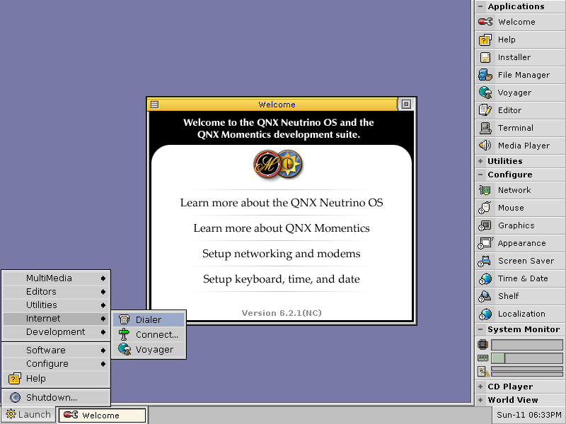
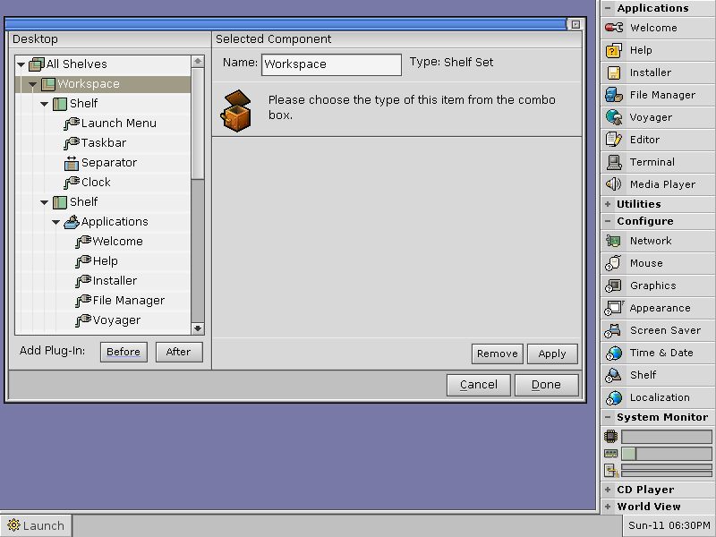
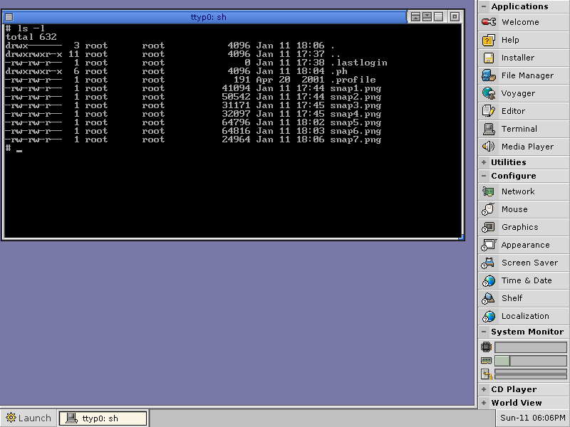

Содержание
QNX — POSIX-совместимая операционная система реального времени, предназначенная преимущественно для встраиваемых систем. Считается одной из лучших реализаций концепции микроядерных операционных систем.
Описание
Как микроядерная операционная система, QNX основана на идее работы основной части своих компонентов как небольших задач, называемых сервисами. Это отличает её от традиционных монолитных ядер, в которых ядро операционной системы — одна большая программа, состоящая из большого количества «частей», каждая со своими особенностями. Использование микроядра в QNX позволяет пользователям (разработчикам) отключить любую ненужную им функциональность, не изменяя ядро. Для этого можно просто не запускать определённый процесс.
Система достаточно небольшая, чтобы в минимальной комплектации уместиться на одну дискету, вместе с этим она считается очень быстрой и должным образом «законченной» (практически не содержащей ошибок).
«QNX Neutrino», выпущенная в 2001 году, перенесена на многие платформы и сейчас способна работать практически на любом современном процессоре, используемом на рынке встраиваемых систем. Среди этих платформ присутствуют семейства x86, MIPS, PowerPC, специализированные семейства процессоров, такие как SH-4, ARM, StrongARM, xScale, а также российские Эльбрус, КОМДИВ-64, Мультикор.
Система платная, при этом для некоммерческого использования и для обучения она предлагается бесплатно в течение 30 дней.
История
В 1980 году студенты канадского Университета Ватерлоо Гордон Беллruen и Дэн Додж закончили изучение базового курса по разработке операционных систем, в ходе которого они создали основу ядра, способного работать в реальном времени. Разработчики были убеждены, что в их продукте была коммерческая потребность, и переехали в город Каната в провинции Онтарио (город высоких технологий, иногда это место называют северной Кремниевой долиной Канады) и основали компанию Quantum Software Systems. В 1982 году была выпущена первая версия QNX, работающая на платформе Intel 8088.
Одно из первых применений QNX, получивших широкое распространение, не относилось к встраиваемым системам — она была выбрана для собственного компьютерного проекта Министерства образования Онтарио, Unisys ICON. В те годы QNX использовалась в основном только для «больших» проектов, так как ядро, имеющее размер 44 килобайта, было слишком большим, чтобы работать на однокристальных чипах того времени. В середине 1980-х годов была выпущена QNX2. Благодаря своей надёжности система имела завидную репутацию и получила широкое распространение для управления промышленными машинами. QNX2 и сейчас иногда применяется в ответственных системах.
В середине 1990-х в Quantum поняли, что на рынке быстро завоёвывает популярность POSIX, и решили переписать ядро, чтобы оно было более совместимым на низком уровне. Так появилась QNX4. Она была доступна со встраиваемой графической подсистемой, названной Photon microGUI, и портированной под QNX версией X Window System. Перенесение программ в QNX4 из операционных систем, основанных на Unix, стало намного проще, также были убраны многие из «причуд» более ранних версий. Также в начале 1990-х компания была переименована в QNX Software Systems (QSS), чтобы избежать путаницы с другими компаниями, в первую очередь с производителем жёстких дисков, имеющим такое же имя.
В конце 1990-х было решено создать операционную систему, соответствующую свежей редакции POSIX и в максимальной степени совместимую с NetBSD и Linux, в то же время сохранив предсказуемое поведение и микроядерную архитектуру. Результатом этих разработок стала QNX Neutrino, выпущенная в 2001 году. Эта версия поставляется вместе с QNX Momentics Tool Suite, интегрированной средой разработки, основанной на Eclipse, различными утилитами GNU и программным обеспечением, ориентированным на Интернет: веб-браузерами Voyager и Mozilla, а также веб-сервером. В отличие от предшествующих версий, работавших только в PC-совместимых архитектурах, QNX6 легко адаптируется практически к любой аппаратной конфигурации. Кроме того, особое внимание было уделено проработке архитектуры с тем, чтобы её можно было эффективно масштабировать: как «вверх» (добавляя новые сервисы и расширяя функциональность), так и «вниз» (урезая функциональность, чтобы «втиснуться» в ограниченные ресурсы). Иными словами, QNX6 можно установить там, где QNX4 не уместилась бы. Также в QNX6 все драйверы были приведены к единой модели и все интерфейсы стали открытыми.
27 октября 2004 года компания QSS была куплена международной корпорацией Harman, активно работающей на рынке мультимедийных устройств и систем автомобильной электроники, но далекой от разработки ОС реального времени. При этом Harman сохранила полную автономию компании QSS, а генеральный директор компании QSS Дэн Додж одновременно занял пост вице-президента корпорации Harman по информационным технологиям.
После 2004 года интерес в мире как к QNX, так и к конкурирующим продуктам, начал угасать. QNX сохранила популярность в основном в Японии, Германии, России и, в последнее время, в Китае благодаря активному развитию рынка автомобильной электроники и интегрированных систем управления производством.
Осенью 2007 года компания QNX Software Systems приступила к поэтапному открытию исходного кода QNX Neutrino на условиях лицензии гибридного типа в рамках сообщества Foundry27. Эта лицензия позволяет энтузиастам бесплатно получать доступ не только к исходным текстам операционной системы, но и к инструментальным средствам. При этом для коммерческого использования QNX Neutrino по-прежнему необходимо приобретать соответствующие лицензии. Кроме того, лицензия QNX Neutrino прямо запрещает проведение сертификаций продуктов, производных от исходного кода QNX Neutrino, без письменного разрешения компании QSS.
В сентябре 2009 года на портале Foundry27 был создан проект, предназначенный для сопровождения QNX4 в публичной форме.
9 апреля 2010 года канадская компания Research In Motion, владеющая брендом BlackBerry, заключила соглашение о выкупе у компании Harman International подразделения, занимающегося разработкой QNX.[14] В этот же день на сайте Foundry27 появилось объявление, что доступ к исходным кодам QNX для широкой общественности с этого момента ограничен.
Примеры применение QNX
В 1982 году QNX попала под запрет комитета COCOM, как технология двойного назначения. Этот запрет был снят в 1990 году, однако жёсткая политика лицензирования привела к тому, что в странах Восточного блока система не получила широкого распространения.
На сегодняшний день единственным ограничением на широкое использование QNX является высокая стоимость лицензии и сильная зависимость от QNX Software Systems в плане лицензирования разработанного программного обеспечения. Но, тем не менее, она занимает лидирующую позицию среди ОС реального времени на платформе ПК.
- Cisco Systems использует оптимизированную версию микроядра QNX Neutrino в программном обеспечении IOS XR. Программный пакет IOS XR предназначен для управления коммутаторами Cisco CRS-1, обеспечивает непрерывный режим работы и поддерживает развитые функции управления терабитными коммутаторами с распределённой архитектурой.
- На март 2009 года решения на базе QNX лицензированы для использования на более чем 10,1 миллиона единиц техники от практически всех ведущих производителей автомобилей, включая BMW, Chrysler, Daimler, Fiat, Ford, General Motors, Honda, Hyundai, Mazda, Mitsubishi, Nissan, Saab, SsangYong, Toyota и Volkswagen. В частности, такие автомобили выпускаются под марками Acura, Alfa Romeo, Audi, Buick, Cadillac, Chevrolet, Dodge, Honda, Hummer, Infiniti, Jeep, Lancia, Mini, Mercedes, Opel, Pontiac, Saturn и другими.
- Используется для управления роботом BigDog.
- BlackBerry использует QNX в качестве основы для своей BlackberryOS 10
- Используется в морских РЛС серии Atlas 1000/1100 компании SAM Electronics
- Применяется РКК «Энергия» как средство управления тренажёром транспортного пилотируемого корабля Союз
Версии
Для международного рынка:
- QNX Neutrino RTOS
- QNX OS for Safety
- QNX OS for Medical
Для российского рынка:
- ЗОСРВ «Нейтрино» КПДА.10964-01
- ЗОСРВ «Нейтрино-Э» КПДА.10965-01
- ЗОСРВ «QNX» КПДА.00002-01
Конкуренты
Наиболее крупными конкурентами QNX являются VxWorks, OS-9, Integrity, LynxOS, MINIX 3 (под лицензией BSD), а также некоторые ОС на ядре Linux (RTLinux и др.).
Ссылки
- QNX: blackberry.qnx.com